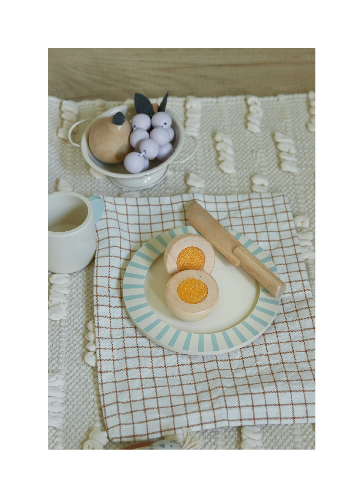

Karnaluks redesign
01
Reimagining a craft supply shop to feel more like an inspiring studio — shifting from a product catalog into a place that supports inspiration, creativity, and reflection.
CONTEXT
Karnaluks is a craft supply store with a wide range of hobbies; the physical shop is loved, but the website felt purely transactional and overwhelming.
GOAL
Rethink the website through emotional design — from catalog to a place that supports inspiration, creativity, and reflection.
WHAT I DESIGNED
A before-and-after homepage concept and clickable prototype — so people can start from inspiration and intent, not only from material categories.


KEY IDEA
A craft store is more than a list of products — it's a starting point for someone's creative journey.
More about the process
I reviewed the live site, then pressure-tested assumptions with a short hands-on exercise outside my usual craft.
What’s broken
- Flat categories → hard to scan
- No meaningful filters → hard to choose
- Jargon → excludes beginners
- Dense UI → low readability
What I learned
- People need a clear starting point
- Creativity comes from play, not precision
- Seeing the outcome drives motivation
- Emotion helps things stick

What changed
- From technical → human
- From browsing → inspiration
- From filtering specs → filtering feel
- From overload → reflection
Directions in the prototype